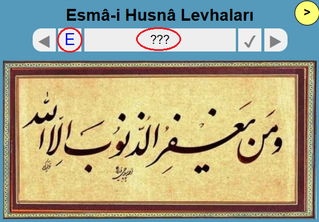

20 Şubat 2024 Perşembe günü başlayan Ramazan ayında topladığımız meyveleri bu sayfada özetledim. Ayrıntılara ilgili linklerden 🔗 erişebilirsiniz.
Arapça sözlük En önemli gelişme, Arapça sözlüğe kelime menüsünden erişmek oldu. Iqra içinde bir kelime seçtikten sonra çıkan bilgi panelinde kelimenin köküne dokunmak yeterli.
Mukabele Bu konuda bir gelişme olmadı. Mukabele videolarına Iqra içinde sayfa bazında erişim planlanıyor. Geniş ekranda, Diyanet mushafı ile Medine mushafını yan yana karşılaştırmak mümkün olacak.
Esmâ sayfaları Kitap tarafında ise, Ramazan projesi en büyük katkı oldu. Projenin hikayesini ve diğer linkleri aşağıda bulabilirsiniz. Özellikle, en sondaki Bulmaca linkini muhakkak deneyin.
"Güzel isimler" anlamında (Osmanlıca) bir sıfat tamlamasıdır. Kitabımızda bu ifade el-esmâul-husnâ şeklinde dört ayette yer alır. Baştaki "el" takısı aceleye getirip yazılmazsa, yapı değişir ve farklı anlamda bir isim tamlaması olur. Bu sebeple esmâul-husnâ halinde kullanımı doğru değildir.
2023 Ramazan ayında yapılan bu çalışma, Esmâ-i Husnâ’yı öğretmekten çok, onları göstermek ve hatırlatmak için hazırlanmış küçük bir Ramazan yolculuğudur. Bir ay boyunca her gün Rabbimizin güzel isimlerinden birini veya birkaçını hatırlamayı ve onları Kuran-ı Kerim’deki kullanımlarıyla birlikte görmeyi amaçladık. Bu vesileyle üç temel hedefi gözetmeye çalıştık:
Bu çalışmanın tefsir ya da kelâm yönüne bakmayın. Projenin amacı, 99 ismin listesini vermek ya da uzun açıklamalarını yapmak değil; onları görmek, tanımak ve kalpte yer etmesini sağlamaktır. Bu yüzden anlam zenginliğinden çok, isimlerin yazılışı ön planda tutulmuştur. Amacımız, ayetlerde yaşayan ve hat sanatında görünür hâle gelen isimler olarak onları yeniden fark etmektir.
2026 Ramazan ayında, üç yıl önce tamamlanmış Esmâ-i Husnâ sayfalarını günlük olarak üç farklı mecrada paylaştık:
Ramazan Notları Yan ürün olarak, daha önceki notlar (2021) Hikayelerde yerini aldı. Instagram tecrübesini paylaşan Selçuk İdrisoğlu'na tekrar teşekkür ederiz.

Öncekilere yazıldığı gibi… Vahyin sürekliliği içinde oruç, eskilerden kalan bir ibadet, kadim bir disiplindir. Musevîlerin Yom Kippur ve Hristiyanların Lent oruçları bu hakikati günümüzde bile yansıtıyor. Bunlar Ramazan orucunun aynısı değil elbette; aynı kökten gelen, farklı biçimlerde yaşayan geleneklerdir.
Ramazan yalnız oruç mu? Ramazan Kuran ayıdır: vahyin indiği ay olması sebebiyle müminin Kuran ile bağını yenilediği, daha çok okuduğu, dinlediği ve anlamaya çalıştığı bir mevsimdir. Teravih, ayakta Kuran dinleyerek Allah’ı anmanın cemaatle yaşanan bir ifadesidir; Ramazan gecelerine farklı bir ruh verir. Mukabele ise, Kitabı ezbere bilene ve bilmeyene, baştan sona okumanın sevincini yaşatır.
Başı Tevbe, Sonu İstiğfar Bilmem kaç bin sene sonra, yine bir Arefe günü, yine Rahmet tepesi. Bu kez Nebilerin mührü (Salât ve selâm ona) oradaydı. Hicretten sonra üçüncü kere, ilk defa hacc niyetiyle Mekke'ye geliyordu. İnsanlar akın akın Allah’ın dinine girerken vahiy süreci ve elçinin ömrü tamamlanmak üzereydi...

Benim İçin Kadir Gecesi O gece göğün açıldığından bahsederlerdi. Duaların geri çevrilmediğini anlatırlardı. Ben de onları dinlerdim. Çocukken insan her şeye inanabiliyor. Ben Ramazan’ı ve Kadir gecelerini böyle yaşarken bir gün babamın şoförü Emrullah ağabey bütün ezberimi bozdu.
Çokluğun Ardındaki Bir İşte burada el-Vâhid isminin derinliği daha açık şekilde anlaşılır. Bütün bu muazzam çokluk, aslında O’nun birliğinin tecellileridir. Çokluk vahdetin gölgesidir; ayrılık birliğin farklı görünüşlerinden ibarettir.
İtikâf: Zarif Bir Sünnet İtikâf, işte bu üçünün en güzel buluştuğu zemindir: Namazla beden, zikirle dil, tefekkür-tezekkür-tedebbür ile akıl ve kalp birlikte Rabbe yönelir. Dışarıdaki kesret (çokluk) perdelenir, içteki vahdet (birlik) zuhur eder.

Veciz bir zikir planı Ramazan içinde, önümüzde pek çok kapılar var. Namaz ve oruç kapılarından giremiyorsak, elimiz açık olsun infak kapısından girelim, dilimiz açık olsun zikir kapısından girelim.
Bu da geçer yâhû! "Dünya sarsılıyor, sen bize ne anlatıyorsun" demeyin. Ses çıkaran sarsıntılar haber değeri taşır; sessiz hakikat ise süreklidir, çok ilgi çekmez. Ben gürültüyü değil, esasları konuşuyorum. Esmâ-i Husnâ’yı anlatıyorum; çünkü bu isimler dünyaya kimin hükmettiğini hatırlatır. Gürültü bir yükselir, bir kaybolur. Ama Rahmân’ın merhameti, Hakîm’in hikmeti, Azîz’in izzeti baki kalır.
Yarın Allah’ın Huzurunda Dünyada ne kadar güçlü olursa olsun, mahşerde en küçük haksızlığın bile sorgusu var, ödeşmesi var. Hiç kimse dünyada iken yaptığı ibadetlere, infaklara güvenmesin; ödeşme sonunda sevaplarını hak sahiplerine dağıtınca iflas etmiş olabilir!

Hiçbiri en üstte değil! Mesela, Taş-Kağıt-Makas oyunu: Hiçbir eleman diğerlerine karşı mutlak üstün değildir. Taş makası kırar, makas kağıdı keser, kağıt taşı sarar. Herbiri diğerini yenerken bir başkasına yenilir. [...] Mor kırmızının, kırmızı sarının, sarı morun içinde. Böylece hiçbir dikdörtgenin kesin bir üstünlüğü yok.
Yirmi Yılın Hikayesi Nihayet bu sene Esmâ projesi için Instagram'a kendim girdim. Her gün iki güzel isim yayınlarken, beş yıl önceden kalan 30 gönderiyi hazır buldum. Onları hikaye yapıp öne çıkartıyor (highlight) ve aynı başlık altında listeliyorum -- yine her gün bir yazı. Resmini en başta gördünüz.
Bulmaca Esmâ-i Husnâ sayfalarında kullanıllan 80 kadar hat eserinden şöyle bir bulmaca yaptık, bakalım bir ay boyunca gördüğünüz isimlerin hangilerini tanıyacaksınız?

Soru işaretine tıklayınca ipucu olarak dosyanın adı gösterilir, "E" üstüne tıklayınca ayrıntılı Esmâ sayfası açılır. Levhaların hepsine yukarıdaki linkten erişebilirsiniz. Link her açıldığında, hat eserleri farklı bir sırada sunulur.